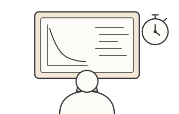
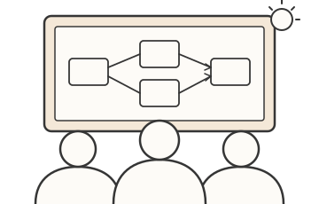

What is ICAIC?
The International Collegiate Artificial Intelligence Contest is an invitation-only, Olympiad-style competition organized by the Department of Computer Science at the National University of Singapore. It brings together teams from universities around the world to solve practical AI problems using real industry data.
U of T has been invited to send a team, and the students selected will take part in both of the contest's events.

Individual Competition
Solve AI tasks on your own, testing algorithm design, machine learning, model optimisation, data analysis, and AI engineering.

Team Competition
Work with your two teammates to tackle a larger, real-world AI challenge from start to finish.
Competitors are given cloud GPU resources, datasets, a development environment, and an evaluation platform, so everyone works on equal footing. The organizers publish a syllabus describing the topics in scope.
Topics in scope
Why apply?
Compete internationally
Test yourself against some of the strongest AI students from universities around the world.
A week in Singapore
Travel to Singapore to compete, supported by the department.
Meet the field
Connect with AI researchers, industry partners, and students from around the world during the programme.
Build real skills
Work on hard, open-ended problems with real data under time pressure, which is excellent experience for research and industry.
How selection works
We are selecting three students through a short, four-stage process.
-
STEP 1
Express interest
by [DATE] -
STEP 2
Qualifier
[DATE] -
STEP 3
Interviews
[DATES] -
STEP 4
Team announced
[DATE]
1. Express interest online form
Fill out the interest form. It asks for:
- Your name, U of T email, student number, and UTORid
- Your major and year of study
- Whether you are available to travel to Singapore for December 6–12, 2026
- Confirmation that you are responsible for making sure you can legally take part, including travel documents
Once the form closes, we will email everyone who is eligible to confirm the date, time, and location of the qualifier.
2. The qualifier 3 hours · in person
You will get a reasonably challenging, Kaggle-style machine learning problem: a dataset, a task, and a clear evaluation metric. Your job is to build the best model you can in three hours.
- Fair setup: everyone works on departmental computers in a locked-down environment. You don't need to bring your own laptop.
- Auto-graded: submissions are scored automatically on hidden test data.
- Rewards generalization: during the qualifier, a live leaderboard shows your score on part of the hidden test set. Final rankings use a separate portion you never see, so models that genuinely generalize beat ones tuned to the leaderboard.
- Limited submissions: you can only submit a set number of times, so validate carefully. You choose which submission counts.
- Ties go to the student who used fewer submissions, then to the earlier final submission.
Please also include your code and a brief write-up of your approach (a few sentences) when you submit. It isn't scored, but we may discuss it at the interview.
3. Interviews shortlisted students
Top performers from the qualifier will be invited to an interview. It has two parts:
Technical
Your background and experience: relevant courses, projects, research, internships, and your approach in the qualifier.
Behavioural
How you communicate and work in a team. ICAIC's team event depends on three people working well together under pressure.
4. Team announced
We will choose the final three students based on the qualifier and the interview together, and let everyone know the outcome by [DATE]. The selected team will then prepare for Singapore together.
Eligibility & requirements
To be considered, you must:
- Be a current undergraduate student at the University of Toronto
- Remain enrolled through December 2026
- Be available to travel to Singapore for the full competition week, December 6–12, 2026
- Be willing to compete in both the individual and team events
- Take responsibility for making sure you can legally participate and travel, including a valid passport and any visa you may need for Singapore
Students in all years are welcome to apply. Priority may be given to students in their third or fourth year. Graduate students are not eligible.
Key dates
| Interest form closes | [DATE] |
| In-person qualifier (3 hours) | [DATE] |
| Interviews | [DATES] |
| Final team announced | [DATE] |
| ICAIC 2026, Singapore | Dec 6–12, 2026 |
FAQ
Do I need to be an AI expert to apply?
No. You should be comfortable writing code and training models (for example, with scikit-learn or PyTorch), but the qualifier is there to find strong problem-solvers, not to check a list of courses.
I'm in first or second year. Should I still apply?
Yes. All undergraduate years are eligible. Priority may go to third- and fourth-year students, but a strong qualifier result and interview count for a lot.
Can I use my own laptop in the qualifier?
No. To keep things fair, everyone uses the same departmental computers in a locked-down environment. We'll share details about the software available with your qualifier confirmation.
How is the qualifier scored?
Automatically, on hidden test data. The live leaderboard shows only part of the test set, and final rankings use the rest, so focus on building a model that generalizes.
Who pays for the trip?
The department is supporting the team's participation. Details will be shared with the selected students.
Do I need a visa for Singapore?
It depends on your citizenship. Check the requirements from Singapore's Immigration & Checkpoints Authority early, and make sure your passport is valid well past December 2026. Securing the right documents is your responsibility.
Can graduate students apply?
No. This opportunity is for undergraduates only.
Interested?
Fill out the interest form by [DATE]. We'll be in touch with details about the qualifier.
Questions? Email [CONTACT EMAIL]